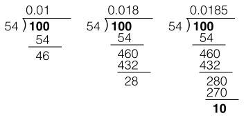

1000 이하의 중에서 이 가장 긴 순환마디를 갖는 수는?
의 순환마디를 구하려면 어떻게 해야 할까? 이 문제를 풀려면 초등학교때 배웠던 나눗셈 절차를 잘 분석하고 이를 수행하는 프로그램을 만들어야 한다. 예를 들어 를 구하는 과정을 자세히 살펴보자.

- 1은 54로 나누어지지 않으므로 몫에
0.을 쓰고 피젯수 뒤에 0을 붙여준다. - 피젯수가 10이 되었지만 여전히 54보다 작아 54로 나누어지지 않는다. 몫에 0을 덧붙여 쓰고 피젯수 뒤에도 0을 붙여준다. 이제 피젯수가 100이 되었다. 100을 54로 나누면 몫은 1, 나머지는 46이 된다.
- 46뒤에 0을 붙여 460으로 만든 다음 54로 나눈다. 몫은 8이고 나머지는 28이다.
- 28뒤에 0을 붙여 280으로 만든 다음 54로 나누면 몫은 5고 나머지는 10이다.
10은 앞에서 봤던 숫자다. 피젯수가 앞에서 나왔던 숫자이므로 과정 2~4가 반복될 것이다. 따라서 순환마디는 185가 됨을 알 수 있다. 이 로직을 그대로 Clojure 함수로 옮기면 다음과 같이 된다. 피젯수가 반복되는지 확인하기 위해 set을 사용했다.
(defn qs [n]
(loop [r 10 r-acc #{} q-acc []]
(cond (zero? r) [n q-acc 0] ; no recurring cycle
(contains? r-acc r) [n q-acc (count q-acc)] ; recurring
:else (recur (* 10 (rem r n)) (conj r-acc r) (conj q-acc (quot r n))))))
위 함수에 인자로 n을 주면 [n dgts cnt] 형태의 벡터를 리턴한다. n은 인자로 받은 n과 같은 값이고, dgts는 소수점 이하 숫자의 벡터이며 cnt는 dgts의 길이다. 엄밀하게 말하자면 cnt는 순환마디의 길이가 아니라 소수점 이하 자릿수지만, 이 문제의 답을 구하는 데는 문제가 없었다.
이 함수를 이용하면 쉽게 문제를 풀 수 있다. 1부터 1000까지 숫자를 증가시키면서 qs로 각 숫자에 대한 순환마디 길이를 구한 다음 그 중 가장 긴 순환마디를 갖는 수를 찾으면 된다.
(defn solve []
(->> (range 1 (inc 1000))
(map qs)
(apply max-key (fn [[_ _ cnt]] cnt))
first))
실행 결과는 다음과 같다.
p026=> (time (solve)) "Elapsed time: 42.317907 msecs" 9?3